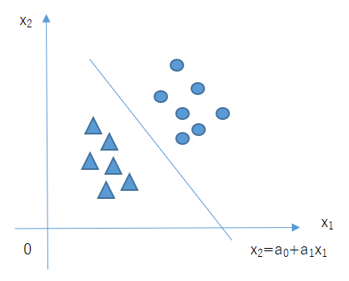

27.次の文章を読み、空欄に最もよく当てはまる選択肢をそれぞれ1つずつ選べ。
2クラス分類において、下図のような（ア）関数によって完全な識別境界が得られるデータを、
（イ）なデータと呼ぶ。

| ア | A. 定数関数 B. 比例関数 C. 1次関数 D. 2次関数 |
| イ | A. 単純分離可能 B. 直線分離可能 C. 線形分離可能 D. 直接分離可能 |
答え Ｃ、Ｃ
【解説】
| 問題文中の図のように、直線（1次関数）（ア＝Ｃ）によって完全な識別境界を 得られるデータのことを、線形分離可能なデータと呼びます。（イ＝Ｃ）。 「線形分離可能なデータ」は「直線による識別境界が得られる」ではなく 「1次関数による識別境界を得られる」ことを理解しましょう。なぜなら、 データの空間が高次元になると、決定境界は直線ではなく、平面や超平面 （高次元の平面）となるからです。 |
 戻る
戻る 一覧へ
一覧へ